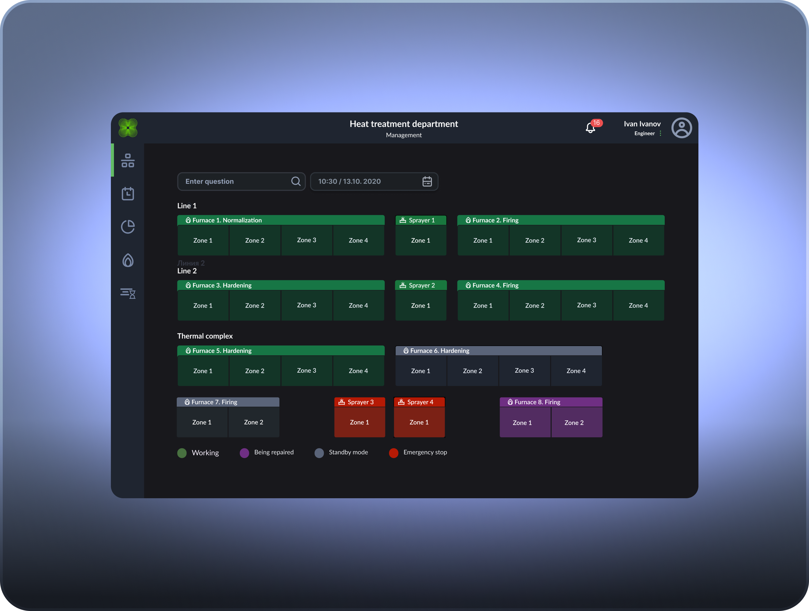
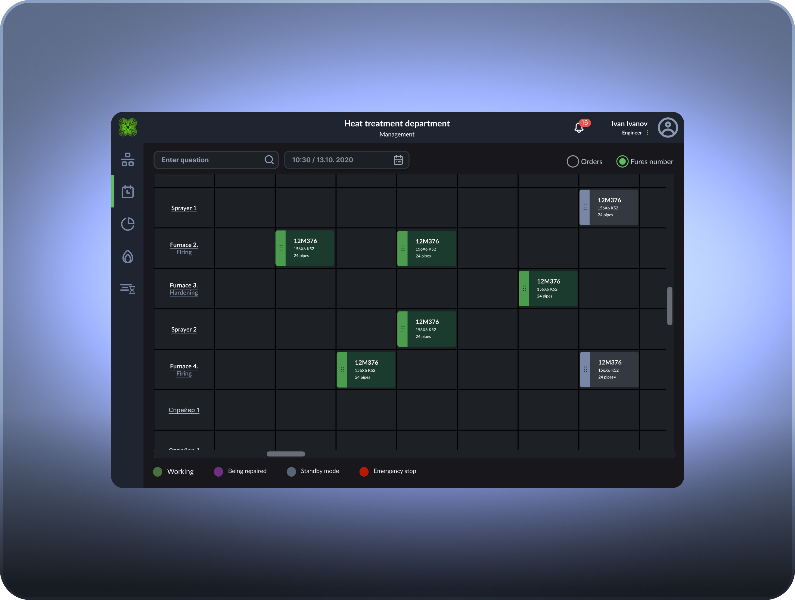
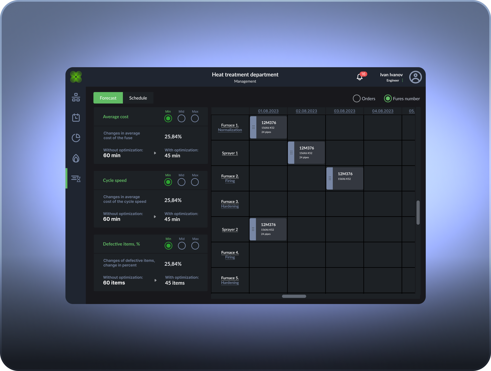
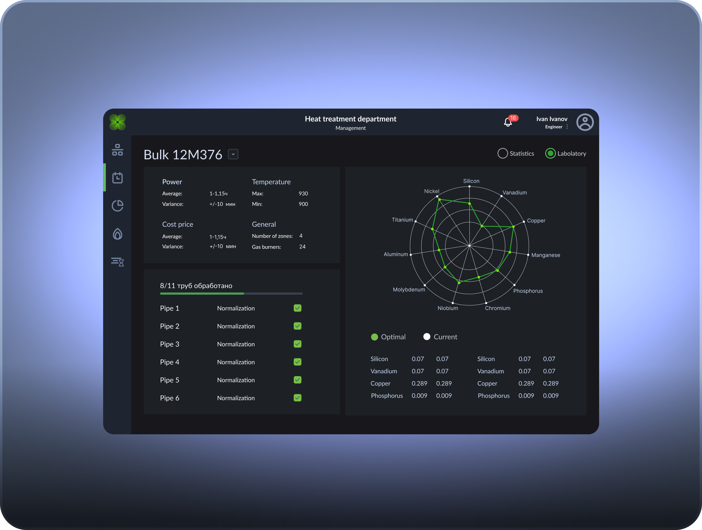

program within the MES system of a metallurgical plant
 1 STEP
1 STEP
 2 STEP
2 STEP
 3 STEP
3 STEP
ML optimization of pipe heat treatment
General description
The AI optimization system for the pipe heat treatment line is designed to control and improve the efficiency of the production process. The main goal is to reduce production costs and the percentage of defective products by optimizing the speed and cost of the processing cycle. The system monitors all line elements - ovens, sprayers and heat treatment zones - displaying their status in real time and provides forecasts of key performance indicators, including cost, processing time and product quality.
The system allows engineers and operators to monitor the process, and management to evaluate KPIs and plan optimization scenarios, ensuring process transparency and improving product quality at all stages.
SCHEDULE MANAGEMENT, HEAT TREATMENT MANAGEMENT AND LABORATORY
Block purpose:monitoring the actual state of the line and implementing the production plan created by the management unit.
Functions:
Equipment condition monitoring
Checking the operation of ovens, sprayers and heat treatment zones.
Equipment status display:
Implementation of the production plan
Comparison of the actual line status with the schedule proposed by the AI.
Make adjustments as necessary (for example, replacing a furnace or redistributing batches).
Batch control
Checking the number and strength group of pipes.
Assignment of processes for each batch: Hardening, Sprayer, Tempering, Normalization.
Monitor processing time and compliance with plan.
Block output:updated processing schedule and monitoring the implementation of the production plan.


Block purpose:determine optimal production parameters based on priorities: speed, quality and cost.
Functions:
Selecting optimization parameters
The manager chooses priority:
Calculation of optimization scenarios
The AI system analyzes possible combinations of line and equipment settings.
Provides a forecast of productivity, cost and defects for each scenario.
Offers three optimization levels: Min, Mid, Max.
Line operation planning
Based on the selected scenario, a schedule for the operation of all furnaces and heat treatment zones is generated.
The order of processing batches of pipes, processing time and equipment loading are determined.
Visualization in the form of graphs and tables for visual analysis.
Block output:optimized production plan and line KPI forecast.

Block purpose:testing of pipes for compliance with quality requirements and control of defects.
Functions:
Batch testing
Checking the mechanical properties of pipes (strength, KCV, load resistance).
Control of the chemical composition of the alloy (Nickel, Vanadium, Silicon, etc.).
Detection of defects
Comparison of actual pipe performance with acceptable standards.
Transferring defect data to the system for analysis and process adjustment.
Analytics and feedback
Generating reports on quality and deviations from plan.
Visualization of deviations from the optimum (optimal vs current processing line).
The data is returned to the management unit for adjustments to optimization and planning.
Block output:quality and defect data, batch statistics for process improvement.

Management creates an optimization scenario → AI calculates the schedule and KPI forecast.
The technologist checks the actual condition of the equipment and implements the schedule → adjusts the plan in case of deviations.
The laboratory tests the pipes → the results are transmitted back to the system → the management unit adjusts the optimization.
Key effect:
Individual entrepreneur (Russia). Details for contracts and payments.
Phone: +7 906 095‑92‑95